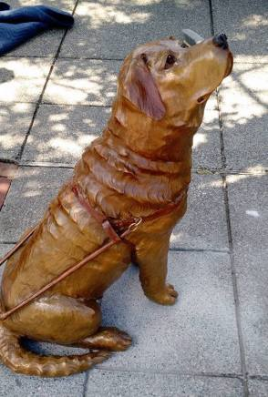
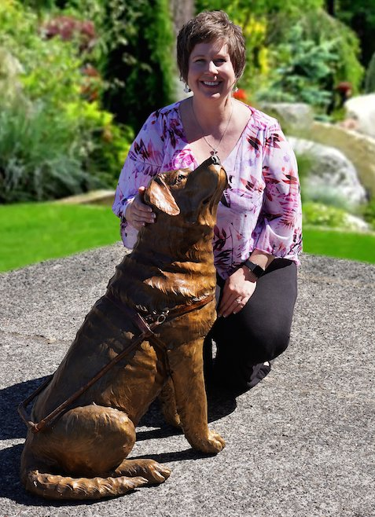

Driscoll

“Driscoll’s addition to the community comes as part of the Gresham Outdoor Public Art effort, chaired by Judy Han. Money to pay for his creation and installation was raised through personal donations and contributions from service clubs, including the Gresham Breakfast Lions Club. Lions Clubs have traditionally supported many vision and blindness-related initiatives.
“‘Han described guide dogs as being part of “the fabric of the community.’
“‘That’s what we see every day,’ she said.”
Read more at:
http://www.pamplinmedia.com/go/42-news/315440-194378-a-dogs-day

Artist: Heather Soderberg-Greene
Heather Soderberg was curious from early on and had a fascination with her father working in a bronze foundry. At a year old her father gave her some soft wax and hours later she had created a sculpture of 5 variations of the female form. By age 2 she sculpted over 100 pieces which her father cast in bronze. At the age of 3 she sold 30 pieces at her first art show and was hired to sculpt her first commission.
Heather gained national and worldwide attention as a young sculpting prodigy when her story was featured by Paul Harvey, People magazine, National Geographic world, and “That’s Incredible”. Heather Moved to Portland to work in a bronze foundry as a welder. In 2009 she bought the foundry she worked at and moved it to the heart of the Columbia River Gorge.
Heather and her husband Richard Greene work together in their studio creating monuments and timeless bronze statues of collectors and institutions worldwide. She is currently sculpting the world’s largest bronze Bald Eagle. It is sculpted entirely by hand without the use of enlargement technology that is so popular with artists right now.
Heather Soderberg’s sculpture of “Sacawagea, Pompi and Seaman” was commissioned by the Port of Cascade Locks and has gained regional and worldwide attention.